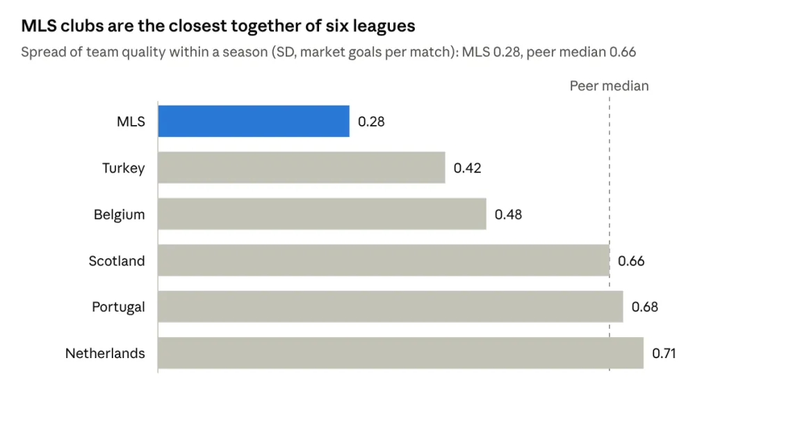
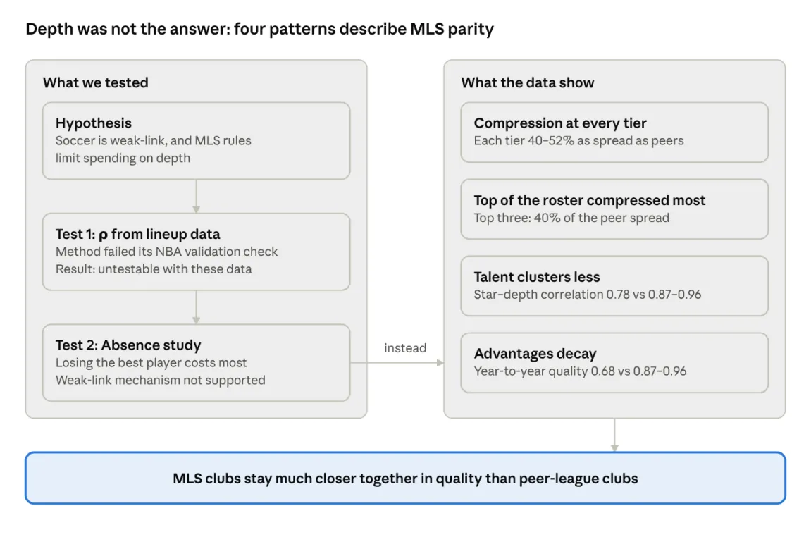

Question 2 · Paper 2
Why are MLS teams so close together?
MLS clubs are closer together in quality than clubs in five comparable leagues at every roster tier, most of all at the top. Talent clusters less, and advantages fade faster from one season to the next.
The claim
Using team ratings built from closing betting odds, MLS has the smallest spread of team quality of six leagues: 0.28 goals per match, against 0.42 to 0.71 in Belgium, the Netherlands, Portugal, Scotland and Turkey. That confirms Paper 1 with independent data and a different method.

Four patterns
| Pattern | MLS | Peers |
|---|---|---|
| Spread of the top three players, as a share of the peer spread | 40% | 100% |
| Spread of depth players, as a share of the peer spread | ~50% | 100% |
| Clubs with the best stars also have the best depth (correlation) | 0.78 | 0.87–0.96 |
| Team quality carried into next season (correlation) | 0.68 | 0.87–0.96 |
| Next season's minutes going to returning players | 67% | 43–53% |
MLS clubs keep more of their players and still fall back further. Salary buys quality with steep diminishing returns, and the highest-paid player is often not a club's best. All four patterns are descriptive: roster rules are a plausible cause, but this paper does not show that they are the cause.
What I expected, and what happened
I started from a specific idea: football might be a weak-link sport, where a team is only as good as its worst regulars, and MLS rules might stop clubs paying for depth. I wrote that down as predictions before downloading the analysis data.
The weak-link mechanism was not supported. Across 1,778 international call-ups and 627 red-card suspensions, losing the best player costs far more than losing a depth player. The best player's estimate lies outside all 500 placebo runs with fake absences.

How the predictions were handled
The predictions were written before the analysis data was downloaded and recorded in the project log on 12 November 2026, and the paper was frozen the same day. Each prediction is scored against the result in the results log. There is no external timestamp, so these are a project record rather than a formal preregistration.
Go deeper
If quality is compressed and advantages fade fast, where should a club spend? The simulator turns these findings into roster scenarios.
The toolOpen the Roster Investment Simulator Back a level · Paper 1How much of an MLS table is chance?